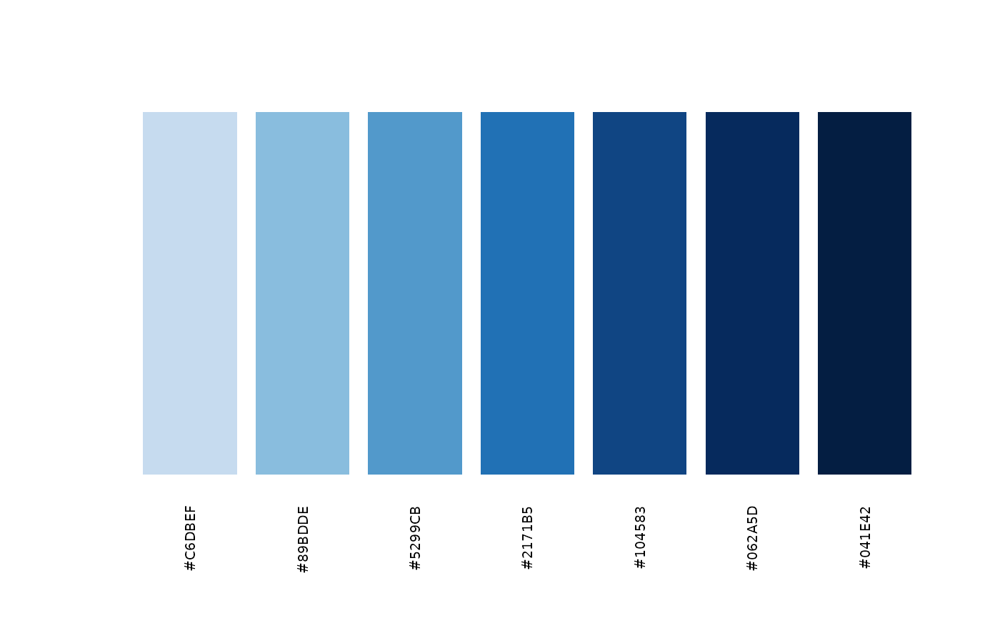
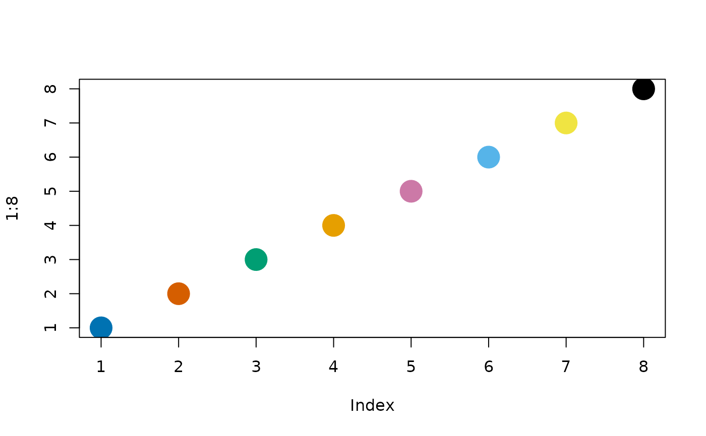

Every plot() method in the package draws with base graphics and
the same small set of style choices, which these functions expose.
blpal() returns colour-blind-safe palettes:
"okabe" (the Okabe-Ito categorical set), "diverging"
(blue, grey, orange), "sequential" (light to dark blue) and
"grey". plotopt() sets the defaults every
method uses, for the session: palette, grid, cex,
las and bg. Each method also takes main,
col (which overrides the palette), palette and ...
passed to the underlying base-graphics call, so a single plot can be
changed without changing the session. Use blpal() also
to colour your own plots so they match the package's.
Usage
blpal(name = c("okabe", "diverging", "sequential", "grey"), n = NULL)
plotopt(...)Arguments
- name
Character scalar, the palette:
"okabe"(the default), or one of"diverging","sequential"and"grey".- n
Integer scalar or
NULL(the default: the palette's own colours). The number of colours wanted;"okabe"and"grey"recycle,"sequential"and"diverging"interpolate.- ...
For
plotopt(), named options to set:palette(a palette name),grid(logical, draw grid lines),cex(numeric text and symbol size),las(axis label orientation, as inpar()),bg(background colour) andpanel(the plot region's fill behind white grid lines,NAfor none). With no arguments, the current values are returned.
Value
blpal(): a character vector of hexadecimal
colours. plotopt(): a named list of the six
options in force (after the change), invisibly when setting.
Details
The palettes: "okabe" is the eight-colour set of Okabe and Ito
(2008), distinguishable under the common forms of colour-vision
deficiency. "diverging" has three anchors (blue #2166AC,
grey #8C8C8C, orange-red #D6604D) and is used for changes
(decrease, no change, increase). The palette "sequential" has five
blues from light to dark; "grey" five greys from dark to light. With n
given, "okabe" and "grey" repeat their colours
(rep_len()) and "diverging" and "sequential" are
interpolated with grDevices::colorRampPalette().
The session options are stored in options(rmoriebricklayer.plot);
the defaults are palette = "okabe", grid = TRUE,
cex = 1, las = 1, bg = "white" and
panel = "#EEF1F6". Setting some options keeps the others.
Text is drawn at the session cex. Titles, axis titles, row labels
and keys are made smaller to fit a small device, but never below 0.6 of
that size, so that they stay readable; for larger text set, for example,
plotopt(cex = 1.2), and for a table with many rows use a taller device.
Errors: an unknown palette name; n not a positive whole
number; an option name other than the six above, or an unnamed value; an
unknown palette option.
References
Okabe, M. and Ito, K. (2008). Color Universal Design (CUD): how to make figures and presentations that are friendly to colorblind people. https://jfly.uni-koeln.de/color/
Examples
blpal("okabe", 3)
#> [1] "#0072B2" "#D55E00" "#009E73"
old <- plotopt(palette = "grey", grid = FALSE)
plotopt()
#> $palette
#> [1] "grey"
#>
#> $grid
#> [1] FALSE
#>
#> $cex
#> [1] 1
#>
#> $las
#> [1] 1
#>
#> $bg
#> [1] "white"
#>
#> $panel
#> [1] "#EEF1F6"
#>
plotopt(palette = old$palette, grid = old$grid)
# an interpolated sequential scale, shown as swatches
cols <- blpal("sequential", 7)
barplot(rep(1, 7), col = cols, border = NA, axes = FALSE, names.arg = cols, las = 2,
cex.names = 0.6)

# the same palette in a base plot of your own
plot(1:8, pch = 19, cex = 3, col = blpal("okabe"))

# names are checked
try(blpal("viridis"))
#> Error : blpal: `name` must be one of "okabe", "diverging", "sequential", "grey", not "viridis"
try(plotopt(colour = "red"))
#> Error : plot options are palette, grid, cex, las, bg, panel